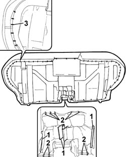
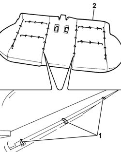

7050C21 COVER of sole cushion of sliding rear seat - R.R.
- Path
- Procedures > 70 FITTINGS > 7050 REAR SEATS > 7050C SLIDING REAR SEATS > 7050C21 COVER of sole cushion of sliding rear seat - R.R.
- Kind
- repair procedure (removal / refitting; the operation number is the code)
- Applies to
- all engines; all production periods
- Interactive page
- https://sloeber94.github.io/elrnDB-fPnd/en/#/2753292
Applies to: all engines; all production periods
 Removing
Removing
 Refitting
Refitting7050C05 Single sliding REAR SEAT with split folding squab - R.R .
7050C11 Single CUSHION of sliding rear seat - S.R.
1. Release the retaining rods.
2. Cut the fastening clips and place the seat belt grip housing trim forwards.
3. Cut the fastening clips along the entire perimeter of the cushion cover.

Applies to: all engines; all production periods
1. Starting from the left and/or right side, break the fastening clips on the outer section.
Turn the fabric over to gain access to the centre clips, then cut them.
Turn the fabric over and cut the clips fastening the upholstery inner rod to the cover.
Carry out the same procedure for the remaining half of the cover.
2. Remove the complete cover from the upholstery.

Applies to: all engines; all production periods
Refitting
RemovingCheck that the cover is intact and that there are no signs of wear or cuts.
Fit the trim to the padding.
Using the special pliers, attach the new clips in the centre section where the cover is joined to the upholstery.
 | Name | Country |
|---|---|---|
- | Pliers for metal points | 1.878.017.001 |
Continue attaching the clips in the outer areas.
Fit the cover in the two housings for the seat belt handles.
Attach the retaining rods.
Attach the clips fastening the seat belt grip trim using special pliers.
| Name | Country |
|---|---|---|
- | Pliers for metal points | 1.878.017.001 |
Attach the fastening clips along the entire perimeter of the cover using the special pliers.
| Name | Country |
|---|---|---|
- | Pliers for metal points | 1.878.017.001 |
7050C11 Single CUSHION of sliding rear seat - S.R.
7050C05 Single sliding REAR SEAT with split folding squab - R.R .